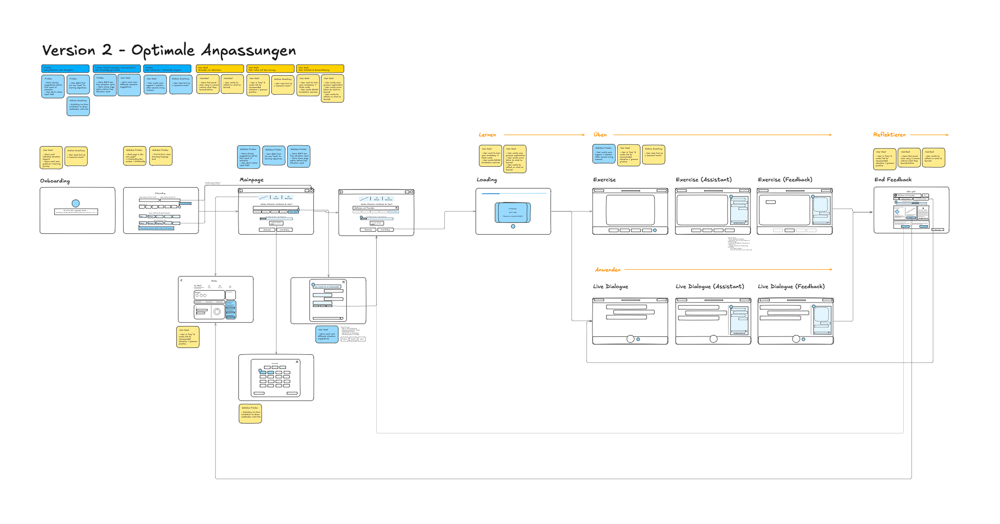
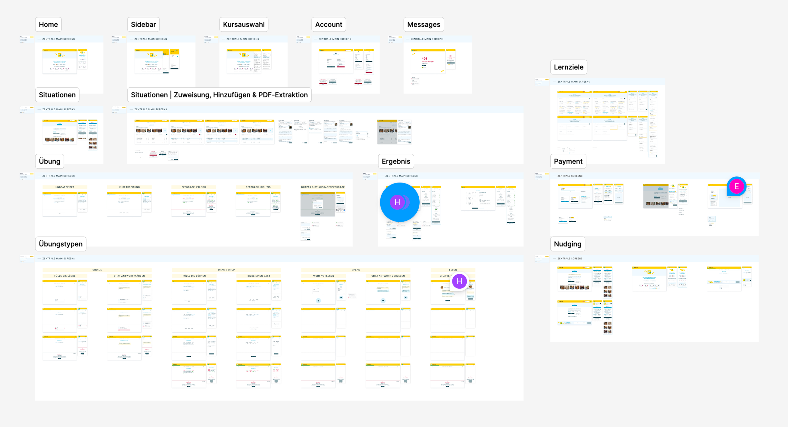

-1.png)
An AI-powered language learning platform delivering personalised, adaptive exercises for learners and full course management for teachers.

The existing product had grown over time: features accumulated, consistency suffered, and the needs of learners, teachers, and admins were not equally served. The goal was to improve and clean up a complex, living platform while keeping all perspectives in balance.
.png)
Like every quarter we ran a full research cycle: collecting feedback, mapping insights, and prioritizing in internal workshops. The key insights: learners want more guidance and situative support, teachers want more control over course structure.

All three roles, learner, teacher, and admin, were reworked. Based on research and workshop results, I sketched flow variants and feature priorities, aligned them with stakeholders, and moved into design sprints.

With the company's CI having recently changed, I built a new component library. It brings all features to a unified design and visual language that runs consistently with the new user flows through all high-fidelity prototypes.

Each flow was tested with real users, both long-term testers and new ones. The insights helped uncover weak points. Working with a vibe-coded prototype allowed usability issues to be fixed immediately after each session and variants to be tested flexibly within the same testing phase.


Features found their place, the experience became consistent, onboarding was refined, and existing ambiguities were resolved. The result is a cleaner, more coherent platform that serves learners, teachers, and admins with clarity.
Active use by learners and language schools, with a growing user base, especially in the B2C sector. Teachers in particular appreciate the opportunity to contribute directly to the design process with their feedback.
.png)
All visual assets are the property of Titanom Solutions and PONS Langenscheidt GmbH.